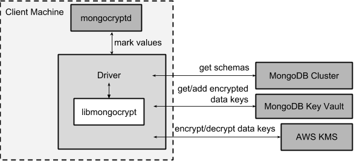

Client Side Encryption
- Status: Accepted
- Minimum Server Version: 4.2 (CSFLE), 6.0 (Queryable Encryption)
- Version: 1.14.0
Abstract
MongoDB 4.2 introduced support for client side encryption, guaranteeing that sensitive data can only be encrypted and decrypted with access to both MongoDB and a separate key management provider (supporting AWS, Azure, GCP, a local provider, and KMIP). Once enabled, data can be seamlessly encrypted and decrypted with minimal application code changes. 6.0 introduced the next generation of client side encryption based on a Structured Encryption framework which allows expressive encrypted search operations. This spec covers both capabilities - 1st generation, "Client Side Field Level Encryption" and generation 2, "Queryable Encryption" - as the associated core cryptographic library and supporting drivers share a common codebase.
META
The keywords "MUST", "MUST NOT", "REQUIRED", "SHALL", "SHALL NOT", "SHOULD", "SHOULD NOT", "RECOMMENDED", "MAY", and "OPTIONAL" in this document are to be interpreted as described in RFC 2119.
Terms
encrypted MongoClient
A MongoClient with client side encryption enabled.
data key
A key used to encrypt and decrypt BSON values. Data keys are encrypted with a key management service (e.g. AWS KMS) and stored within a document in the MongoDB key vault collection (see Key vault collection schema for data keys for a description of the data key document). Therefore, a client needs access to both MongoDB and the external KMS service to utilize a data key.
MongoDB key vault collection
A MongoDB collection designated to contain data keys. This can either be co-located with the data-bearing cluster, or in a separate external MongoDB cluster.
Key Management Service (KMS)
An external service providing fixed-size encryption/decryption. Only data keys are encrypted and decrypted with KMS.
KMS providers
A map of KMS providers to credentials. Configured client-side. Example:
kms_providers = { "aws": { "accessKeyId": AWS_KEYID, "secretAccessKey": AWS_SECRET, }, "local": { "key": LOCAL_KEK }, }
KMS provider
A configured KMS. Identified by a key in the KMS providers map. The key has the form "
KMS provider type
The type of backing KMS. Identified by the string: "aws", "azure", "gcp", "kmip", or "local".
KMS provider name
An optional name to identify a KMS provider. Enables configuring multiple KMS providers with the same KMS provider type (e.g. "aws:name1" and "aws:name2" can refer to different AWS accounts).
Customer Master Key (CMK)
The underlying key AWS KMS uses to encrypt and decrypt. See AWS Key Management Service Concepts.
schema
A MongoDB JSON Schema (either supplied by the server or client-side) which may include metadata about encrypted fields. This is a JSON Schema based on draft 4 of the JSON Schema specification, as documented in the MongoDB manual..
A library, written in C, that coordinates communication, does encryption/decryption, caches key and schemas. Located here.
A local process the driver communicates with to determine how to encrypt values in a command.
This term, spelled in all-lowercase with an underscore, refers to the client-side field-level-encryption dynamic library provided as part of a MongoDB Enterprise distribution. It replaces mongocryptd as the method of marking-up a database command for encryption.
See also:
ciphertext
One of the data formats of BSON binary encrypted, representing an encoded BSON document containing encrypted ciphertext and metadata.
FLE
FLE is the first version of Client-Side Field Level Encryption. FLE is almost entirely client-side with the exception of server-side JSON schema.
Queryable Encryption
Queryable Encryption the second version of Client-Side Field Level Encryption. Data is encrypted client-side. Queryable Encryption supports indexed encrypted fields, which are further processed server-side.
In-Use Encryption
Is an umbrella term describing the both FLE and Queryable Encryption.
encryptedFields
A BSON document describing the Queryable Encryption encrypted fields. This is analogous to the JSON Schema in FLE. The following is an example encryptedFields in extended canonical JSON:
{
"escCollection": "enxcol_.CollectionName.esc",
"ecocCollection": "enxcol_.CollectionName.ecoc",
"fields": [
{
"path": "firstName",
"keyId": { "$binary": { "subType": "04", "base64": "AAAAAAAAAAAAAAAAAAAAAA==" }},
"bsonType": "string",
"queries": {"queryType": "equality"}
},
{
"path": "ssn",
"keyId": { "$binary": { "subType": "04", "base64": "BBBBBBBBBBBBBBBBBBBBBB==" }},
"bsonType": "string"
}
]
}
The acronyms within encryptedFields are defined as follows:
- ECOC: Encrypted Compaction Collection
- ESC: Encrypted State Collection
Introduction
Client side encryption enables users to specify what fields in a collection must be encrypted, and the driver automatically encrypts commands and decrypts results. Automatic encryption is enterprise only. But users can manually encrypt and decrypt with a new ClientEncryption object.
Client side encryption requires MongoDB 4.2 compatible drivers, and is only supported against 4.2 or higher servers. See Why is a 4.2 server required?.
The following shows basic usage of the new API.
# The schema map identifies fields on collections that must undergo encryption.
schema_map = open("./schemas.json", "r").read()
# AWS KMS is used to decrypt data keys stored in the key vault collection.
aws_creds = open("./aws_credentials.json", "r").read()
# A client is configured for automatic encryption and decryption by passing
# AutoEncryptionOpts. Automatic encryption is an enterprise only feature.
opts = AutoEncryptionOpts(
kms_providers={"aws": aws_creds},
key_vault_namespace="db.datakeys",
schema_map=schema_map)
db = MongoClient(auto_encryption_opts=opts).db
# Commands are encrypted, as determined by the JSON Schema from the schema_map.
db.coll.insert_one({"ssn": "457-55-5462"})
# Replies are decrypted.
print(db.coll.find_one()) # { "ssn": "457-55-5462" } but stored and transported as ciphertext.
# A ClientEncryption object is used for explicit encryption, decryption, and creating data keys.
opts = ClientEncryptionOpts(kms_providers=kms, key_vault_namespace="db.datakeys")
clientencryption = ClientEncryption(client, opts)
# Use a ClientEncryption to create new data keys.
# The master key identifies the CMK on AWS KMS to use for encrypting the data key.
master_key = open("./aws_masterkey.json", "r").read()
opts = DataKeyOpts (master_key=master_key)
created_key_id = clientencryption.create_data_key("aws", opts)
# Use a ClientEncryption to explicitly encrypt and decrypt.
opts = EncryptOpts(key_id=created_key_id,
algorithm="AEAD_AES_256_CBC_HMAC_SHA_512-Random")
encrypted = clientencryption.encrypt("secret text", opts)
decrypted = clientencryption.decrypt(encrypted)
There are many moving parts to client side encryption with lots of similar sounding terms. Before proceeding to implement the specification, the following background should provide some context.
The driver interacts with multiple components to implement client side encryption.

The driver communicates with…
- MongoDB cluster to get remote JSON Schemas.
- MongoDB key vault collection to get encrypted data keys and create new data keys.
- A KMS Provider to decrypt fetched data keys and encrypt new data keys.
- mongocryptd to ask what values in BSON commands must be encrypted (unless crypt_shared is in use).
The MongoDB key vault may be the same as the MongoDB cluster. Users may choose to have data key stored on a separate MongoDB cluster, or co-locate with their data.
MongoDB Key Vault collection
The key vault collection is a special MongoDB collection containing key documents. See the appendix section Key vault collection schema for data keys for a description of the documents.
The key material in the key vault collection is encrypted with a separate KMS service. Therefore, encryption and decryption requires access to a MongoDB cluster and the KMS service.
KMS Provider
A KMS provider (AWS KMS, Azure Key Vault, GCP KMS, the local provider, or KMIP) is used to decrypt data keys after fetching from the MongoDB Key Vault, and encrypt newly created data keys. Refer to KMSProviders for the shape of the KMS provider options.
mongocryptd
mongocryptd is a singleton local process needed for auto-encryption when no crypt_shared library is
used. It speaks the MongoDB wire protocol and the driver uses mongocryptd by connecting with a
MongoClient. By default, if crypt_shared is unavailable, the driver should attempt to automatically
spawn mongocryptd. If the MongoClient is configured with extraOptions.mongocryptdBypassSpawn set to
true, OR bypassAutoEncryption is set to true, OR bypassQueryAnalysis is set to true then the driver will not
attempt to spawn mongocryptd.
The mongocryptd process is responsible for self terminating after idling for a time period. If
extraOptions.cryptSharedLibRequired is set to true, the driver will not
connect to mongocryptd and instead rely on crypt_shared being available.
crypt_shared
crypt_shared is a dynamically-loaded C++ library providing query analysis for auto-encryption. It replaces mongocryptd for performing query analysis to - mark-up sensitive fields within a command.
Drivers are not required to load and interact with crypt_shared directly. Instead, they inform libmongocrypt where to find crypt_shared and libmongocrypt will handle crypt_shared communication automatically.
See also: Enabling crypt_shared for information on using enabling the crypt_shared library.
libmongocrypt
libmongocrypt is a C library providing crypto and coordination with external components. Located here.
libmongocrypt is responsible for…
- orchestrating an internal state machine.
- asking the driver to perform I/O, then handling the responses.
- includes constructing KMS HTTP requests and parsing KMS responses.
- doing encryption and decryption.
- caching data keys.
- caching results of listCollections.
- creating key material.
The driver is responsible for…
- performing all I/O needed at every state:
- speaking to mongocryptd to mark commands (unless crypt_shared is used).
- fetching encrypted data keys from key vault collection (mongod).
- running listCollections on mongod.
- decrypting encrypted data keys with KMS over TLS.
- doing I/O asynchronously as needed.
See Why require including a C library?
User facing API
Drivers MUST NOT preclude future options from being added to any of the new interfaces.
Drivers MAY represent the options types in a way that is idiomatic to the driver or language. E.g. options MAY be a BSON document or dictionary type. The driver MAY forego validating options and instead defer validation to the underlying implementation.
Drivers MAY deviate the spelling of option names to conform to their language's naming conventions and implement options in an idiomatic way (e.g. keyword arguments, builder classes, etc.).
Drivers MAY use a native UUID type in place of a parameter or return type specified as a BSON binary with subtype 0x04 as described in Handling of Native UUID Types.
MongoClient Changes
class MongoClient {
MongoClient(... autoEncryptionOpts: AutoEncryptionOpts);
// Implementation details.
private mongocrypt_t libmongocrypt_handle; // Handle to libmongocrypt.
private Optional<MongoClient> mongocryptd_client; // Client to mongocryptd.
private MongoClient keyvault_client; // Client used to run find on the key vault collection. This is either an external MongoClient, the parent MongoClient, or internal_client.
private MongoClient metadata_client; // Client used to run listCollections. This is either the parent MongoClient or internal_client.
private Optional<MongoClient> internal_client; // An internal MongoClient. Created if no external keyVaultClient was set, or if a metadataClient is needed
// Exposition-only, used for caching automatic Azure credentials. The cached credentials may be globally cached.
private cachedAzureAccessToken?: AzureAccessToken;
private azureAccessTokenExpireTime?: PointInTime;
}
class AutoEncryptionOpts {
keyVaultClient: Optional<MongoClient>;
keyVaultNamespace: String;
kmsProviders: KMSProviders;
schemaMap: Optional<Map<String, Document>>; // Maps namespace to a local schema
bypassAutoEncryption: Optional<Boolean>; // Default false.
extraOptions: Optional<Map<String, Value>>;
tlsOptions?: KMSProvidersTLSOptions; // Maps KMS provider to TLS options.
encryptedFieldsMap: Optional<Map<String, Document>>; // Maps namespace to encryptedFields.
// bypassQueryAnalysis disables automatic analysis of outgoing commands.
// Set bypassQueryAnalysis to true to use explicit encryption on indexed fields
// without the MongoDB Enterprise Advanced licensed crypt_shared library.
bypassQueryAnalysis: Optional<Boolean>; // Default false.
}
A MongoClient can be configured to automatically encrypt collection commands and decrypt results.
Drivers MUST document that auto encryption is an enterprise-only feature and that auto encryption only occurs on collection level operations by including the following in the driver documentation for AutoEncryptionOpts:
Automatic encryption is an enterprise only feature that only applies to operations on a collection. Automatic encryption is not supported for operations on a database or view, and operations that are not bypassed will result in error (see libmongocrypt: Auto Encryption Allow-List). To bypass automatic encryption for all operations, set bypassAutoEncryption=true in AutoEncryptionOpts.
Explicit encryption/decryption and automatic decryption is a community feature. A MongoClient configured with bypassAutoEncryption=true will still automatically decrypt.
Drivers MUST document that auto encryption requires the authenticated user to have the listCollections privilege action by including the following in the driver documentation for MongoClient:
Automatic encryption requires the authenticated user to have the listCollections privilege action.
See Why is client side encryption configured on a MongoClient?
keyVaultNamespace
The key vault collection namespace refers to a collection that contains all data keys used for encryption and decryption (aka the key vault collection). Data keys are stored as documents in a special MongoDB collection. Data keys are protected with encryption by a KMS provider (AWS KMS, Azure key vault, GCP KMS, a local master key, or KMIP).
keyVaultClient
The key vault collection is assumed to reside on the same MongoDB cluster as indicated by the connecting URI. But the optional keyVaultClient can be used to route data key queries to a separate MongoDB cluster.
If a keyVaultClient is not passed, and the parent MongoClient is configured with a limited maxPoolSize, the
keyVaultClient is set to an internal MongoClient. See
keyVaultClient, metadataClient, and the internal MongoClient
for configuration behavior.
See What's the deal with metadataClient, keyVaultClient, and the internal client?
keyVaultClient, metadataClient, and the internal MongoClient
The following pseudo-code describes the configuration behavior for the three MongoClient objects:
def getOrCreateInternalClient (client, clientOpts):
if client.internalClient != None:
return client.internalClient
internalClientOpts = copy(clientOpts)
internalClientOpts.autoEncryptionOpts = None
internalClientOpts.minPoolSize = 0
client.internalClient = MongoClient (internalClientOpts)
return client.internalClient
def configureAutoEncryptionClients (client, clientOpts):
if clientOpts.autoEncryptionOpts.keyVaultClient != None:
client.keyVaultClient = clientOpts.autoEncryptionOpts.keyVaultClient
elif clientOpts.maxPoolSize == 0:
client.keyVaultClient = client
else:
client.keyVaultClient = getOrCreateInternalClient (client, clientOpts)
if clientOpts.autoEncryptionOpts.bypassAutomaticEncryption:
client.metadataClient = None
elif clientOpts.maxPoolSize == 0:
client.metadataClient = client
else:
client.metadataClient = getOrCreateInternalClient (client, clientOpts)
Configuring the internal MongoClient MUST match the parent MongoClient, except minPoolSize is set to 0 and
AutoEncryptionOpts is omitted. This includes copying the options and host information from the URI, and other non-URI
configuration (monitoring callbacks, stable API, etc.).
Drivers MUST document that an additional MongoClient may be created, using the following as a template:
If a
MongoClientwith a limited connection pool size (i.e a non-zeromaxPoolSize) is configured withAutoEncryptionOpts, a separate internalMongoClientis created if any of the following are true:
AutoEncryptionOpts.keyVaultClientis not passed.AutoEncryptionOpts.bypassAutomaticEncryptionisfalse.If an internal
MongoClientis created, it is configured with the same options as the parentMongoClientexceptminPoolSizeis set to0andAutoEncryptionOptsis omitted.
See What's the deal with metadataClient, keyVaultClient, and the internal client?
kmsProviders
The kmsProviders property may be specified on ClientEncryptionOpts or
AutoEncryptionOpts. Multiple KMS providers may be specified, each using a specific property on
the KMSProviders object. The options differ for each KMS provider type. The "local" KMS provider type
is configured with master key material. The external providers are configured with credentials to authenticate.
Throughout this document, the KMS provider is annotated as - KMSProvider, but this name is for exposition only:
drivers MUST accept arbitrary strings at runtime for forward-compatibility.
interface KMSProviders {
aws?: AWSKMSOptions | { /* Empty (See "Automatic Credentials") */ };
azure?: AzureKMSOptions | { /* Empty (See "Automatic Credentials") */ };
gcp?: GCPKMSOptions | { /* Empty (See "Automatic Credentials") */ };
local?: LocalKMSOptions;
kmip?: KMIPKMSOptions;
// KMS providers may be specified with an optional name suffix separated by a colon.
// Named KMS providers do not support "Automatic Credentials".
// Note: the named KMS providers strings below are not valid Typescript regexes. They are intended for exposition only.
"^aws:[a-zA-Z0-9_]+$"?: AWSKMSOptions;
"^azure:[a-zA-Z0-9_]+$"?: AzureKMSOptions;
"^gcp:[a-zA-Z0-9_]+$"?: GCPKMSOptions;
"^local:[a-zA-Z0-9_]+$"?: LocalKMSOptions;
"^kmip:[a-zA-Z0-9_]+$"?: KMIPKMSOptions;
};
// KMSProvider is a string identifying a KMS provider. Note: For forward
// compatibility, any string should be accepted.
type KMSProvider = string;
interface AWSKMSOptions {
accessKeyId: string;
secretAccessKey: string;
sessionToken?: string; // Required for temporary AWS credentials.
};
type AzureKMSOptions = AzureKMSCredentials | AzureAccessToken;
interface AzureKMSCredentials {
tenantId: string;
clientId: string;
clientSecret: string;
identityPlatformEndpoint?: string; // Defaults to login.microsoftonline.com
};
interface AzureAccessToken {
accessToken: string;
};
type GCPKMSOptions = GCPKMSCredentials | GCPKMSAccessToken
interface GCPKMSCredentials {
email: string;
privateKey: byte[] | string; // May be passed as a base64 encoded string.
endpoint?: string; // Defaults to oauth2.googleapis.com
};
interface GCPKMSAccessToken {
accessToken: string;
}
interface LocalKMSOptions {
key: byte[96] | string; // The master key used to encrypt/decrypt data keys. May be passed as a base64 encoded string.
};
interface KMIPKMSOptions {
endpoint: string;
};
The following shows an example object of KMSProviders:
{
# Pass credentials for AWS:
"aws": { "accessKeyId": "foo", "secretAccessKey": "bar" },
# Use an empty document to enable "Automatic Credentials" for Azure:
"azure": {},
# Pass an access token for GCP:
"gcp": { "accessToken": "foo" },
# Pass a 96 byte base64 encoded string for the local KMS provider.
"local": { "key": "Mng0NCt4ZHVUYUJCa1kxNkVyNUR1QURhZ2h2UzR2d2RrZzh0cFBwM3R6NmdWMDFBMUN3YkQ5aXRRMkhGRGdQV09wOGVNYUMxT2k3NjZKelhaQmRCZGJkTXVyZG9uSjFk" }
# Pass the endpoint for KMIP:
"kmip": { "endpoint": "localhost:5698" }
# Pass credentials for a different AWS account by appending a name.
# Note: credentials with a name do not support "Automatic Credentials".
"aws:name2": { "accessKeyId": "foo2", "secretAccessKey": "bar2" }
}
Automatic Credentials
Certain values of KMSProviders indicate a request by the user that the associated KMS providers should be populated lazily on-demand. The driver MUST be able to populate the respective options object on-demand if-and-only-if such respective credentials are needed. The request for KMS credentials will be indicated by libmongocrypt only once they are needed.
When such a state is detected, libmongocrypt will call back to the driver by entering the
MONGOCRYPT_CTX_NEED_KMS_CREDENTIALS state, upon which the driver should fill in the KMS options automatically.
Automatic credentials are only supported for the KMS provider types aws, gcp, and azure. KMS providers containing
a name (e.g. aws:myname) do not support automatic credentials. Attempting to configure a KMS provider with a name for
automatic credentials results in a runtime error from libmongocrypt. See
Why do on-demand KMS credentials not support named KMS providers?
[!NOTE] Drivers MUST NOT eagerly fill an empty KMS options property.
Once requested, drivers MUST create a new KMSProviders $P$ according to the following process:
- Let $K$ be the kmsProviders value provided by the user as part of the original ClientEncryptionOpts or AutoEncryptionOpts.
- Initialize $P$ to an empty KMSProviders object.
- If $K$ contains an
awsproperty, and that property is an empty map:- Attempt to obtain credentials $C$ from the environment using similar logic as is detailed in the obtaining-AWS-credentials section from the Driver Authentication specification, but ignoring the case of loading the credentials from a URI
- If credentials $C$ were successfully loaded, create a new AWSKMSOptions map from $C$ and insert
that map onto $P$ as the
awsproperty.
- If $K$ contains an
gcpproperty, and that property is an empty map:- Attempt to obtain credentials $C$ from the environment logic as is detailed in Obtaining GCP Credentials.
- If credentials $C$ were successfully loaded, create a new GCPKMSOptions map from $C$ and insert
that map onto $P$ as the
gcpproperty.
- If $K$ contains an
azureproperty, and that property is an empty map:- If there is a
cachedAzureAccessTokenAND the duration untilazureAccessTokenExpireTimeis greater than one minute, insertcachedAzureAccessTokenas theazureproperty on $P$. - Otherwise:
- Let $t_0$ be the current time.
- Attempt to obtain an Azure VM Managed Identity Access Token $T$ as detailed in Obtaining an Access Token for Azure Key Vault.
- If a token $T$ with expire duration $d_{exp}$ were obtained successfully, create a new
AzureAccessToken object with $T$ as the
accessTokenproperty. Insert that AzureAccessToken object into $P$ as theazureproperty. Record the generated AzureAccessToken incachedAzureAccessToken. Record theazureAccessTokenExpireTimeas $t_0 + d_{exp}$.
- If there is a
- Return $P$ as the additional KMS providers to libmongocrypt.
Obtaining GCP Credentials
Set HOST to metadata.google.internal.
Send an HTTP request to the URL http://<HOST>/computeMetadata/v1/instance/service-accounts/default/token with the
header Metadata-Flavor: Google.
If the HTTP response code is not 200, return an error including the body of the HTTP response in the error message.
Parse the HTTP response body as JSON. If parsing fails, return an error including the body of the HTTP response in the error message.
Check the parsed JSON for the field "access_token". If "access_token" is not present, return an error including the body of the HTTP response in the error message.
Return "access_token" as the credential.
Obtaining an Access Token for Azure Key Vault
Virtual machines running on the Azure platform have one or more Managed Identities associated with them. From within the VM, an identity can be used by obtaining an access token via HTTP from the Azure Instance Metadata Service (IMDS). See this documentation for more information
[!NOTE] To optimize for testability, it is recommended to implement an isolated abstraction for communication with IMDS. This will aide in the implementation of the prose tests of the communication with an IMDS server.
The below steps should be taken:
-
Let $U$ be a new URL, initialized from the URL string
"http://169.254.169.254/metadata/identity/oauth2/token" -
Add a query parameter
api-version=2018-02-01to $U$. -
Add a query parameter
resource=https://vault.azure.net/to $U$. -
Prepare an HTTP GET request $Req$ based on $U$.
[!NOTE] All query parameters on $U$ should be appropriately percent-encoded
-
Add HTTP headers
Metadata: trueandAccept: application/jsonto $Req$. -
Issue $Req$ to the Azure IMDS server
169.254.169.254:80. Let $Resp$ be the response from the server. If the HTTP response is not completely received within ten seconds, consider the request to have timed out, and return an error instead of an access token. -
If $Resp_{status} ≠ 200$, obtaining the access token has failed, and the HTTP response body of $Resp$ encodes information about the error that occurred. Return an error including the HTTP response body instead of an access token.
-
Otherwise, let $J$ be the JSON document encoded in the HTTP response body of $Resp$.
-
The result access token $T$ is given as the
access_tokenstring property of $J$. Return $T$ as the resulting access token. -
The resulting "expires in" duration $d_{exp}$ is a count of seconds given as an ASCII-encoded integer string
expires_inproperty of $J$.
[!NOTE] If JSON decoding of $Resp$ fails, or the
access_tokenproperty is absent from $J$, this is a protocol error from IMDS. Indicate this error to the requester of the access token.
[!NOTE] If an Azure VM has more than one managed identity, requesting an access token requires additional query parameters to disambiguate the request. For simplicity, these parameters are omitted, and only VMs that have a single managed identity are supported.
KMS provider TLS options
Drivers MUST provide TLS options to configure TLS connections KMS providers.
The TLS options SHOULD be consistent with the existing TLS options for MongoDB server TLS connections. The TLS options
MUST enable setting a custom client certificate, equivalent to the tlsCertificateKeyFile URI option.
Drivers SHOULD provide API that is consistent with configuring TLS options for MongoDB server TLS connections. New API to support the TLS options MUST support future addition of KMS providers without requiring a driver API change. The following is an example:
class AutoEncryptionOpts {
// setTLSOptions accepts a map of KMS providers to TLSOptions.
// The TLSOptions apply to any TLS socket required to communicate
// with the KMS provider.
setTLSOptions (opts: KMSProvidersTLSOptions)
}
class ClientEncryptionOpts {
// setTLSOptions accepts a map of KMS providers to TLSOptions.
// The TLSOptions apply to any TLS socket required to communicate
// with the KMS provider.
setTLSOptions (opts: KMSProvidersTLSOptions)
}
Drivers MUST raise an error if the TLS options are set to disable TLS. The error MUST contain the message "TLS is required".
Drivers SHOULD raise an error if insecure TLS options are set. The error MUST contain the message "Insecure TLS options prohibited". This includes options equivalent to the following URI options:
tlsInsecuretlsAllowInvalidCertificatestlsAllowInvalidHostnamestlsDisableCertificateRevocationCheck
Drivers MUST NOT raise an error if tlsDisableOCSPEndpointCheck is set. Setting tlsDisableOCSPEndpointCheck may
prevent operation errors when OCSP responders are unresponsive.
See the OCSP specification for a description of the default values of
tlsDisableOCSPEndpointCheck and
tlsDisableCertificateRevocationCheck Drivers
MUST NOT modify the default value of tlsDisableOCSPEndpointCheck and tlsDisableCertificateRevocationCheck for KMS
TLS connections.
See Why do KMS providers require TLS options?
schemaMap
Automatic encryption is configured with an "encrypt" field in a collection's JSONSchema. By default, a collection's JSONSchema is periodically polled with the listCollections command. But a JSONSchema may be specified locally with the schemaMap option. Drivers MUST document that a local schema is more secure and MUST include the following in the driver documentation for MongoClient:
Supplying a schemaMap provides more security than relying on JSON Schemas obtained from the server. It protects against a malicious server advertising a false JSON Schema, which could trick the client into sending unencrypted data that should be encrypted.
Drivers MUST document that a local schema only applies to client side encryption, and specifying JSON Schema features unrelated to encryption will result in error. Drivers MUST include the following in the driver documentation for MongoClient:
Schemas supplied in the schemaMap only apply to configuring automatic encryption for client side encryption. Other validation rules in the JSON schema will not be enforced by the driver and will result in an error.
bypassAutoEncryption
Drivers MUST disable auto encryption when the 'bypassAutoEncryption' option is true and not try to spawn mongocryptd. Automatic encryption may be disabled with the bypassAutoEncryption option. See Why is there a bypassAutoEncryption?.
extraOptions
The extraOptions relate to the mongocryptd process, an implementation detail described in the Implementation section:
{
// Defaults to "mongodb://localhost:27020".
mongocryptdURI: Optional<String>,
// Defaults to false.
mongocryptdBypassSpawn: Optional<Boolean>,
// Used for spawning. Defaults to empty string and spawns mongocryptd from system path.
mongocryptdSpawnPath: Optional<String>,
// Passed when spawning mongocryptd. If omitted, this defaults to ["--idleShutdownTimeoutSecs=60"]
mongocryptdSpawnArgs: Optional<Array[String]>
// Override the path used to load the crypt_shared library
cryptSharedLibPath: Optional<string>;
// If 'true', refuse to continue encryption without a crypt_shared library
cryptSharedLibRequired: boolean;
}
Drivers MUST implement extraOptions in a way that allows deprecating/removing options in the future without an API break, such as with a BSON document or map type instead of a struct type with fixed fields. See Why are extraOptions and kmsProviders maps?.
extraOptions.cryptSharedLibPath
- Type:
undefined | string - Default:
undefined
Allow the user to specify an absolute path to a crypt_shared dynamic library to load. Refer:
extraOptions.cryptSharedLibRequired
- Type:
boolean - Default:
false
If true, the driver MUST refuse to continue unless crypt_shared was loaded successfully.
If, after initializing a libmongocrypt_handle, crypt_shared is detected to be unavailable AND
extraOptions.cryptSharedLibRequired is true, the driver MUST consider the
libmongocrypt_handle to be invalid and return an error to the user. Refer:
encryptedFieldsMap
encryptedFieldsMap maps a collection namespace to an encryptedFields.
encryptedFieldsMap only applies to Queryable Encryption.
If a collection is present on both the encryptedFieldsMap and schemaMap, libmongocrypt will error
on initialization. See fle2-and-fle1-error.
If a collection has a set of encrypted fields, the behavior of CreateCollection() and Collection.Drop() is altered.
An additional helper, CreateEncryptedCollection() has been defined as a convenience wrapper around
CreateCollection(). See fle2-createcollection-drop.
Automatic encryption in Queryable Encryption is configured with the encryptedFields.
If a collection is not present on the encryptedFields a server-side collection encryptedFields may be used by
libmongocrypt. Drivers MUST include the following in the documentation for MongoClient:
Supplying an
encryptedFieldsMapprovides more security than relying on anencryptedFieldsobtained from the server. It protects against a malicious server advertising a falseencryptedFields.
bypassQueryAnalysis
See Why is bypassQueryAnalysis needed?.
Queryable Encryption Create and Drop Collection Helpers
A collection supporting Queryable Encryption requires an index and three additional collections.
Collection encryptedFields Lookup (GetEncryptedFields)
The convenience methods support the following lookup process for finding the encryptedFields associated with a
collection.
Assume an exposition-only function $GetEncryptedFields(opts, collName, dbName, askDb)$, where $opts$ is a set of
options, $collName$ is the name of the collection, $dbName$ is the name of the database associated with that collection,
and $askDb$ is a boolean value. The resulting encryptedFields $EF$ is found by:
- Let $QualName$ be the string formed by joining$dbName$ and $collName$ with an ASCII dot
".". - If $opts$ contains an
"encryptedFields"property, then $EF$ is the value of that property. - Otherwise, if
AutoEncryptionOptions.encryptedFieldsMapcontains an element named by $QualName$, then $EF$ is the value of that element. - Otherwise, if $askDb$ is
true:- Issue a
listCollectionscommand against the database named by $dbName$, filtered by{name: <collName>}. Let the result be the document $L$. - If $L$ contains an
optionsdocument element, and that element contains anencryptedFieldsdocument element, $EF$ is $L$["options"]["encryptedFields"]. - Otherwise, $EF$ is not-found
- Issue a
- Otherwise, $EF$ is considered not-found.
Create Collection Helper
Drivers MUST support a BSON document option named encryptedFields for any
create command helpers (e.g.
Database.createCollection()). This option will be interpreted by the helper method and MUST be passed to the
create command.
[!NOTE] Users are not expected to set the
escCollectionandecocCollectionoptions inencryptedFields. SERVER-74069 added server-side validation for those fields and no longer allows names to deviate from the following:
enxcol_.<collectionName>.escenxcol_.<collectionName>.ecocDrivers MUST NOT document the
escCollectionandecocCollectionoptions.
For a helper function, CreateCollection(collectionName, collectionOptions) with the name of the database associated as
$dbName$, look up the encrypted fields encryptedFields for the collection as $GetEncryptedFields(collectionOptions,
collectionName, dbName, false)$ (See here).
If a set of encryptedFields was found, then do the following operations. If any of the following operations error, the
remaining operations are not attempted:
- Check the wire version of the writable server. If the wire version is less than 21 (for server 7.0.0), return an error containing the error message: "Driver support of Queryable Encryption is incompatible with server. Upgrade server to use Queryable Encryption."
- Create the collection with name
encryptedFields["escCollection"]as a clustered collection using the options{clusteredIndex: {key: {_id: 1}, unique: true}}. IfencryptedFields["escCollection"]is not set, use the collection nameenxcol_.<collectionName>.esc. Creating this collection MUST NOT check if the collection namespace is in theAutoEncryptionOpts.encryptedFieldsMap. the collection namespace is in theAutoEncryptionOpts.encryptedFieldsMap. - Create the collection with name
encryptedFields["ecocCollection"]as a clustered collection using the options{clusteredIndex: {key: {_id: 1}, unique: true}}. IfencryptedFields["ecocCollection"]is not set, use the collection nameenxcol_.<collectionName>.ecoc. Creating this collection MUST NOT check if the collection namespace is in theAutoEncryptionOpts.encryptedFieldsMap. - Create the collection
collectionNamewithcollectionOptionsand the optionencryptedFieldsset to theencryptedFields. - Create the the index
{"__safeContent__": 1}on collectioncollectionName.
Create Encrypted Collection Helper
To support automatic generation of encryption data keys, a helper $CreateEncryptedCollection(CE, database, collName, collOpts, kmsProvider, masterKey)$ is defined, where $CE$ is a ClientEncryption object, $kmsProvider$ is a KMSProvider and $masterKey$ is equivalent to the $masterKey$ defined in DataKeyOpts. It has the following behavior:
- If $collOpts$ contains an
"encryptedFields"property, then $EF$ is the value of that property. Otherwise, report an error that there are noencryptedFieldsdefined for the collection. - Let $EF'$ be a copy of $EF$. Update $EF'$ in the following manner:
- Let $Fields$ be the
"fields"element within $EF'$. - If $Fields$ is present and is an array value, then for each element $F$ of
Fields:- If $F$ is not a document element, skip it.
- Otherwise, if $F$ has a
"keyId"named element $K$ and $K$ is anullvalue:- Create a DataKeyOpts named $dkOpts$ with the $masterKey$ argument.
- Let $D$ be the result of
CE.createDataKey(kmsProvider, dkOpts). - If generating $D$ resulted in an error $E$, the entire $CreateEncryptedCollection$ must now fail with error $E$. Return the partially-formed $EF'$ with the error so that the caller may know what datakeys have already been created by the helper.
- Replace $K$ in $F$ with $D$.
- Let $Fields$ be the
- Create a new set of options $collOpts'$ duplicating $collOpts$. Set the
"encryptedFields"named element of $collOpts'$ to $EF'$. - Invoke the
CreateCollectionhelper as $CreateCollection(database, collName, collOpts')$. Return the resulting collection and the generated $EF'$. If an error occurred, return the resulting $EF$ with the error so that the caller may know what datakeys have already been created by the helper.
Drivers MUST document that $createEncryptedCollection$ does not affect any auto encryption settings on existing MongoClients that are already configured with auto encryption. Users must configure auto encryption after creating the encrypted collection with the $createEncryptedCollection$ helper.
Drop Collection Helper
Drivers MUST support a BSON document option named encryptedFields for any
drop command helpers (e.g. Database.dropCollection(),
Collection.drop()). This option will only be interpreted by the helper method and MUST NOT be passed to the
drop command.
[!NOTE] Users are not expected to set the
escCollectionandecocCollectionoptions inencryptedFields. SERVER-74069 added server-side validation for those fields and no longer allows names to deviate from the following:
enxcol_.<collectionName>.escenxcol_.<collectionName>.ecocDrivers SHOULD NOT document the
escCollectionandecocCollectionoptions.
For a helper function DropCollection(dropOptions) with associated collection named $collName$ and database named
$dbName$, look up the encrypted fields encryptedFields as $GetEncryptedFields(dropOptions, collName, dbname, true)$
(See here).
If a set of encryptedFields was found, then perform the following operations. If any of the following operations
error, the remaining operations are not attempted. A namespace not found error returned from the server (server error
code 26) MUST be ignored:
- Drop the collection with name
encryptedFields["escCollection"]. IfencryptedFields["escCollection"]is not set, use the collection nameenxcol_.<collectionName>.esc. - Drop the collection with name
encryptedFields["ecocCollection"]. IfencryptedFields["ecocCollection"]is not set, use the collection nameenxcol_.<collectionName>.ecoc. - Drop the collection
collectionName.
ClientEncryption
class ClientEncryption {
ClientEncryption(opts: ClientEncryptionOpts);
// The "Create Encrypted Collection" helper is a convenience function wrapping CreateCollection. It will
// create a collection with encrypted fields, automatically allocating and assigning new data encryption
// keys. It returns a handle to the new collection, as well as a document consisting of the generated
// "encryptedFields" options. Refer to "Create Encrypted Collection Helper"
createEncryptedCollection(database: Database, collName: string, collOpts, kmsProvider: KMSProvider, masterKey: Optional<Document>): [Collection, Document];
// Creates a new key document and inserts into the key vault collection.
// Returns the _id of the created document as a UUID (BSON binary subtype 0x04).
createDataKey(kmsProvider: KMSProvider, opts: DataKeyOpts | null): Binary;
// Decrypts multiple data keys and (re-)encrypts them with a new masterKey, or with their current masterKey if a new one is not given.
// The updated fields of each rewrapped data key is updated in the key vault collection as part of a single bulk write operation.
// If no data key matches the given filter, no bulk write operation is executed.
// Returns a RewrapManyDataKeyResult.
rewrapManyDataKey(filter: Document, opts: RewrapManyDataKeyOpts | null): RewrapManyDataKeyResult;
// Removes the key document with the given UUID (BSON binary subtype 0x04) from the key vault collection.
// Returns the result of the internal deleteOne() operation on the key vault collection.
deleteKey(id: Binary): DeleteResult;
// Finds a single key document with the given UUID (BSON binary subtype 0x04).
// Returns the result of the internal find() operation on the key vault collection.
getKey(id: Binary): Optional<Document>;
// Finds all documents in the key vault collection.
// Returns the result of the internal find() operation on the key vault collection.
getKeys(): Iterable<Document>;
// Adds a keyAltName to the keyAltNames array of the key document in the key vault collection with the given UUID (BSON binary subtype 0x04).
// Returns the previous version of the key document.
addKeyAltName(id: Binary, keyAltName: String): Optional<Document>;
// Removes a keyAltName from the keyAltNames array of the key document in the key vault collection with the given UUID (BSON binary subtype 0x04).
// Returns the previous version of the key document.
removeKeyAltName(id: Binary, keyAltName: String): Optional<Document>;
// Returns a key document in the key vault collection with the given keyAltName.
getKeyByAltName(keyAltName: String): Optional<Document>;
// Encrypts a BsonValue with a given key and algorithm.
// Returns an encrypted value (BSON binary of subtype 6). The underlying implementation MAY return an error for prohibited BSON values.
encrypt(value: BsonValue, opts: EncryptOpts): Binary;
// encryptExpression encrypts a Match Expression or Aggregate Expression to query a range index.
// `expr` is expected to be a BSON document of one of the following forms:
// 1. A Match Expression of this form:
// {$and: [{<field>: {$gt: <value1>}}, {<field>: {$lt: <value2> }}]}
// 2. An Aggregate Expression of this form:
// {$and: [{$gt: [<fieldpath>, <value1>]}, {$lt: [<fieldpath>, <value2>]}]
// $gt may also be $gte. $lt may also be $lte.
// Only supported when queryType is "range" and algorithm is "Range".
encryptExpression(expr: Document, opts: EncryptOpts): Document;
// Decrypts an encrypted value (BSON binary of subtype 6).
// Returns the original BSON value.
decrypt(value: Binary): BsonValue;
// Implementation details.
private mongocrypt_t libmongocrypt_handle;
private MongoClient keyvault_client;
}
interface ClientEncryptionOpts {
keyVaultClient: MongoClient;
keyVaultNamespace: String;
kmsProviders: KMSProviders;
tlsOptions?: KMSProvidersTLSOptions; // Maps KMS provider to TLS options.
};
interface KMSProvidersTLSOptions {
// Map the KMS providers to a set of TLS options
[provider: KMSProvider]: TLSOptionsMap;
};
The ClientEncryption encapsulates explicit operations on a key vault collection that cannot be done directly on a MongoClient. Similar to configuring auto encryption on a MongoClient, it is constructed with a MongoClient (to a MongoDB cluster containing the key vault collection), KMS provider configuration, keyVaultNamespace, and tlsOptions. It provides an API for explicitly encrypting and decrypting values, and managing data keys in the key vault collection.
See Why do we have a separate top level type for ClientEncryption? and Why do we need to pass a client to create a ClientEncryption?
When implementing behavior and error handling for key vault functions, Drivers SHOULD assume the presence of a unique
index in the key vault collection on the keyAltNames field with a partial index filter for only documents where
keyAltNames exists when implementing behavior of key management functions. Drivers MAY choose to not validate or
enforce the existence of the unique index, but MUST still be capable of handling errors that such a unique index may
yield.
See Why aren't we creating a unique index in the key vault collection?
DataKeyOpts
class DataKeyOpts {
masterKey: Optional<Document>
keyAltNames: Optional<Array[String]> // An alternative to _id to reference a key.
keyMaterial: Optional<BinData>
}
masterKey
The masterKey document identifies a KMS-specific key used to encrypt the new data key. If kmsProvider has KMS provider type "aws", the masterKey is required and has the following fields:
{
region: String,
key: String, // The Amazon Resource Name (ARN) to the AWS customer master key (CMK).
endpoint: Optional<String> // An alternate host identifier to send KMS requests to. May include port number. Defaults to "kms.<region>.amazonaws.com"
}
If the kmsProvider has KMS provider type "azure", the masterKey is required and has the following fields:
{
keyVaultEndpoint: String, // Host with optional port. Example: "example.vault.azure.net".
keyName: String,
keyVersion: Optional<String> // A specific version of the named key, defaults to using the key's primary version.
}
If the kmsProvider has KMS provider type "gcp", the masterKey is required and has the following fields:
{
projectId: String,
location: String,
keyRing: String,
keyName: String,
keyVersion: Optional<String>, // A specific version of the named key, defaults to using the key's primary version.
endpoint: Optional<String> // Host with optional port. Defaults to "cloudkms.googleapis.com".
}
If the kmsProvider has KMS provider type "local", the masterKey is not applicable.
If the kmsProvider has KMS provider type "kmip", the masterKey is required and has the following fields:
{
keyId: Optional<String>, // keyId is the KMIP Unique Identifier to a 96 byte KMIP Secret Data managed object.
// If keyId is omitted, the driver creates a random 96 byte KMIP Secret Data managed object.
endpoint: Optional<String>, // Host with optional port.
delegated: Optional<Boolean> // If true, this key should be decrypted by the KMIP server.
}
Drivers MUST document the expected fields in the masterKey document for the "aws", "azure", "gcp", and "kmip" KMS provider types. Additionally, they MUST document that masterKey is required for these KMS provider types and is not optional.
The value of endpoint or keyVaultEndpoint is a host name with optional port number separated by a colon. E.g.
"kms.us-east-1.amazonaws.com" or "kms.us-east-1.amazonaws.com:443". It is assumed that the host name is not an IP
address or IP literal. Though drivers MUST NOT inspect the value of "endpoint" that a user sets when creating a data
key, a driver will inspect it when connecting to KMS to determine a port number if present.
keyAltNames
An optional list of string alternate names used to reference a key. If a key is created with alternate names, then
encryption may refer to the key by the unique alternate name instead of by _id. The following example shows creating
and referring to a data key by alternate name:
opts = DataKeyOpts(keyAltNames=["name1"])
clientencryption.create_data_key ("local", opts)
# reference the key with the alternate name
opts = EncryptOpts(keyAltName="name1", algorithm="AEAD_AES_256_CBC_HMAC_SHA_512-Random")
clientencryption.encrypt("457-55-5462", opts)
keyMaterial
An optional BinData of 96 bytes to use as custom key material for the data key being created. If keyMaterial is given,
the custom key material is used for encrypting and decrypting data. Otherwise, the key material for the new data key is
generated from a cryptographically secure random device.
rewrapManyDataKey
If applicable, drivers MUST document that users must upgrade dependencies if necessary to avoid being impacted by MONGOCRYPT-464.
If applicable, drivers MUST return an error if rewrapManyDataKey is called with libmongocrypt 1.5.1 or 1.5.0.
RewrapManyDataKeyOpts
class RewrapManyDataKeyOpts {
provider: String
masterKey: Optional<Document>
}
The masterKey document MUST have the fields corresponding to the given provider as specified in
masterKey. masterKey MUST NOT be given if it is not applicable for the given provider.
RewrapManyDataKeyResult
class RewrapManyDataKeyResult {
bulkWriteResult: Optional<BulkWriteResult>;
}
bulkWriteResult is the result of the bulk write operation used to update the key
vault collection with one or more rewrapped data keys. If rewrapManyDataKey() does not find any matching keys to
rewrap, no bulk write operation will be executed and this field will be unset. This field may also be unset if the bulk
write operation is unacknowledged as permitted by the CRUD API Spec.
See Why does rewrapManyDataKey return RewrapManyDataKeyResult instead of BulkWriteResult?
EncryptOpts
class EncryptOpts {
keyId : Optional<Binary>
keyAltName: Optional<String>
algorithm: String,
contentionFactor: Optional<Int64>,
queryType: Optional<String>
rangeOpts: Optional<RangeOpts>
}
// RangeOpts specifies index options for a Queryable Encryption field supporting "range" queries.
// min, max, trimFactor, sparsity, and precision must match the values set in the encryptedFields of the destination collection.
// For double and decimal128, min/max/precision must all be set, or all be unset.
class RangeOpts {
// min is the minimum value for the encrypted index. Required if precision is set.
min: Optional<BSONValue>,
// max is the maximum value for the encrypted index. Required if precision is set.
max: Optional<BSONValue>,
// trimFactor may be used to tune performance. When omitted, a default value is used.
trimFactor: Optional<Int32>,
// sparsity may be used to tune performance. When omitted, a default value is used.
sparsity: Optional<Int64>,
// precision determines the number of significant digits after the decimal point. May only be set for double or decimal128.
precision: Optional<Int32>
}
Explicit encryption requires a key and algorithm. Keys are either identified by _id or by alternate name. Exactly one
is required.
keyId
Identifies a data key by _id. The value is a UUID (binary subtype 4).
keyAltName
Identifies a key vault collection document by 'keyAltName'.
algorithm
One of the strings:
- "AEAD_AES_256_CBC_HMAC_SHA_512-Deterministic"
- "AEAD_AES_256_CBC_HMAC_SHA_512-Random"
- "Indexed"
- "Unindexed"
- "Range"
The result of explicit encryption with the "Indexed" or "Range" algorithm must be processed by the server to insert or query. Drivers MUST document the following behavior:
To insert or query with an "Indexed" or "Range" encrypted payload, use a
MongoClientconfigured withAutoEncryptionOpts.AutoEncryptionOpts.bypassQueryAnalysismay be true.AutoEncryptionOpts.bypassAutoEncryptionmust be false.
contentionFactor
contentionFactor may be used to tune performance. Only applies when algorithm is "Indexed" or "Range". libmongocrypt returns an error if contentionFactor is set for a non-applicable algorithm.
queryType
One of the strings:
- "equality"
- "range"
queryType only applies when algorithm is "Indexed" or "Range". libmongocrypt returns an error if queryType is set for a non-applicable queryType.
rangeOpts
rangeOpts only applies when algorithm is "Range". libmongocrypt returns an error if rangeOpts is set for a non-applicable algorithm.
User facing API: When Auto Encryption Fails
Auto encryption requires parsing the MongoDB query language client side (with the mongocryptd process or crypt_shared library). For unsupported operations, an exception will propagate to prevent the possibility of the client sending unencrypted data that should be encrypted. Drivers MUST include the following in the documentation for MongoClient:
If automatic encryption fails on an operation, use a MongoClient configured with bypassAutoEncryption=true and use ClientEncryption.encrypt() to manually encrypt values.
For example, currently an aggregate with $lookup into a foreign collection is unsupported (mongocryptd
and crypt_shared return errors):
opts = AutoEncryptionOpts (
key_vault_namespace="keyvault.datakeys",
kms_providers=kms)
client = MongoClient(auto_encryption_opts=opts)
accounts = client.db.accounts
results = accounts.aggregate([
{
"$lookup": {
"from": "people",
"pipeline": [
{
"$match": {
"ssn": "457-55-5462"
}
}
],
"as": "person"
}
]) # Raises an error
print (next(results)["person"]["ssn"])
In this case, the user should use explicit encryption on a client configured to bypass auto encryption. (Note, automatic decryption still occurs).
opts = AutoEncryptionOpts (
key_vault_namespace="keyvault.datakeys",
kms_providers=kms,
bypass_auto_encryption=True)
client = MongoClient(auto_encryption_opts=opts)
opts = ClientEncryptionOpts (
key_vault_client=client,
key_vault_namespace="keyvault.datakeys",
kms_providers=kms,
bypass_auto_encryption=True)
client_encryption = ClientEncryption(opts)
accounts = client.db.accounts
results = accounts.aggregate([
{
"$lookup": {
"from": "people",
"pipeline": [
{
"$match": {
"ssn": client_encryption.encrypt("457-55-5462", EncryptOpts(key_alt_name="ssn", algorithm="AEAD_AES_256_CBC_HMAC_SHA_512-Deterministic"))
}
}
],
"as": "person"
}
]) # Throws an exception
print (next(results)["person"]["ssn"])
User facing API: View limitations
Users cannot use auto encryption with views. Attempting to do so results in an exception. Drivers do not need to validate when the user is attempting to enable auto encryption on a view, but may defer to the underlying implementation.
Although auto encryption does not work on views, users may still use explicit encrypt and decrypt functions on views on a MongoClient without auto encryption enabled.
See Why do operations on views fail?
Implementation
Drivers MUST integrate with libmongocrypt. libmongocrypt exposes a simple state machine to perform operations. Follow the guide to integrating libmongocrypt.
Drivers SHOULD take a best-effort approach to store sensitive data securely when interacting with KMS since responses may include decrypted data key material (e.g. use secure malloc if available).
All errors from the MongoClient to mongocryptd or the crypt_shared error category MUST be distinguished in some way (e.g. exception type) to make it easier for users to distinguish when a command fails due to auto encryption limitations.
All errors from the MongoClient interacting with the key vault collection MUST be distinguished in some way (e.g. exception type) to make it easier for users to distinguish when a command fails due to behind-the-scenes operations required for encryption, decryption, or key management.
Drivers MUST apply timeouts to operations executed as part of client-side encryption per Client Side Operations Timeout: Client Side Encryption.
Integrating with libmongocrypt
Each ClientEncryption instance MUST have one libmongocrypt_handle.
The libmongocrypt C API documentation For information on how to initialize, encrypt, decrypt with libmongocrypt.
The Guide to Integrating libmongocrypt For information about integrating the libmongocrypt library in a driver.
libmongocrypt exposes logging capabilities. If a driver provides a logging mechanism, it MUST enable this logging and integrate. E.g. if your driver exposes a logging callback that a user can set, it SHOULD be possible to get log messages from libmongocrypt.
Drivers MUST propagate errors from libmongocrypt in whatever way is idiomatic to the driver (exception, error object, etc.). These errors MUST be distinguished in some way (e.g. exception type) to make it easier for users to distinguish when a command fails due to client side encryption.
Enabling Command Marking with the crypt_shared Library
The MongoDB Enterprise distribution includes a dynamic library named mongo_crypt_v1 (with the appropriate file
extension or filename suffix for the host platform). This library will be loaded by libmongocrypt when
the mongocrypt_init function is invoked
(from the libmongocrypt C API) based on the
search criteria that are provided by the driver.
libmongocrypt allows the driver to specify an arbitrary list of directory search paths in which to search for the crypt_shared dynamic library. The user-facing API does not expose this full search path functionality. This extended search path customization is intended to facilitate driver testing with crypt_shared (Refer: Search Paths for Testing and Path Resolution Behavior).
[!NOTE] The driver MUST NOT manipulate or do any validation on the crypt_shared path options provided in extraOptions. They should be passed through to libmongocrypt unchanged.
Setting Search Paths
For the user-facing API the driver MUST append the literal string - "$SYSTEM" to the search paths for the
libmongocrypt_handle if bypassAutoEncryption is not set to true, and MUST NOT append to the search path if it is
set to true or if the libmongocrypt instance is used for explicit encryption only (i.e. on the
ClientEncryption class). For purposes of testing, a driver may use a different set of search paths.
Explanation
The search paths array in libmongocrypt allows the driver to customize the way that libmongocrypt searches and loads the crypt_shared library. For testing purposes, the driver may change the paths that it appends for crypt_shared searching to better isolate the test execution from the ambient state of the host system.
Refer to: Path Resolution Behavior and Search Paths for Testing
Overriding the crypt_shared Library Path
If extraOptions.cryptSharedLibPath was specified by the user, the driver MUST set
the crypt_shared path override on the libmongocrypt_handle.
[!NOTE] If a path override is set on a
libmongocrypt_handleand libmongocrypt fails to load crypt_shared from that filepath, then that will result in a hard-error when initializing libmongocrypt.
Path Resolution Behavior
Drivers should include and note the following information regarding the behavior of crypt_shared path options in extraOptions:
-
If used, the override path must be given as a path to the crypt_shared dynamic library file itself, and not simply the directory that contains it.
-
If the given override path is a relative path and the first path component is the literal string
"$ORIGIN", the"$ORIGIN"component will be replaced by the absolute path to the directory containing the libmongocrypt library that is performing the crypt_shared search. This behavior mimics the$ORIGINbehavior of theRUNPATH/RPATHproperties of ELF executable files. This permits bundling the crypt_shared library along with libmongocrypt for creating portable application distributions without relying on a externally/globally available crypt_shared library.[!NOTE] No other
RPATH/RUNPATH-style substitutions are available. -
If the override path is given as a relative path, that path will be resolved relative to the working directory of the operating system process.
-
If an override path was specified and libmongocrypt fails to load crypt_shared from that filepath, libmongocrypt will fail to initialize with a hard-error. libmongocrypt will not attempt to search for crypt_shared in any other locations.
-
If libmongocrypt fails to load the crypt_shared library after searching the system (and no override path is specified), libmongocrypt will proceed without error and presume that crypt_shared is unavailable.
Search Paths for Testing
Drivers can make use of different search paths settings for testing purposes. These search paths use the following behavior:
-
For crypt_shared search paths, if a search path string is
"$SYSTEM", then — instead of libmongocrypt searching for crypt_shared in a directory named "$SYSTEM" — libmongocrypt will defer to the operating system's own dynamic-library resolution mechanism when processing that search-path. For this reason,"$SYSTEM"is the only search path appended when the driver is used via the user-facing API. -
The search paths also support the
$ORIGINsubstitution string. -
Like with the override path, if a search path is given as a relative path, that path will be resolved relative to the working directory of the operating system process.
-
If no search paths are appended to the
libmongocrypt_handle, the resulting search paths will be an empty array, effectively disabling crypt_shared searching.In this case, unless an override path is specified, libmongocrypt is guaranteed not to load crypt_shared.
Detecting crypt_shared Availability
crypt_shared availability can only be reliably detected after initializing the
libmongocrypt_handle.
After initializing the libmongocrypt_handle, the driver can detect whether crypt_shared was
successfully loaded by asking libmongocrypt for the crypt_shared version string. If
the result is an empty string, libmongocrypt did not load crypt_shared and the driver
must rely on mongocryptd to mark command documents for encryption.
"Disabling" crypt_shared
For purposes of testing, a driver can "disable" crypt_shared searching to ensure that mongocryptd is used instead, even if a crypt_shared library would be available.
As noted in Path Resolution Behavior, crypt_shared can be "disabled" on a
libmongocrypt_handle by omission:
- Do not specify any search paths,
- AND do not specify a crypt_shared library override path (extraOptions.cryptSharedLibPath).
This will have the effect that libmongocrypt will not attempt to search or load crypt_shared during initialization.
At the current time, no user-facing API is exposed that allows users to opt-out of crypt_shared.
Loading crypt_shared Multiple Times
Due to implementation restrictions, there must not be more than one crypt_shared dynamic library loaded
simultaneously in a single operating system process. libmongocrypt will do its best to enforce this at the time that
it loads crypt_shared while initializing a libmongocrypt_handle. libmongocrypt will keep track of
the open crypt_shared library globally, and any subsequent attempt to use a
crypt_shared library that does not exactly match the filepath of the already-loaded
crypt_shared will result in an error.
If at least one libmongocrypt_handle exists in an operating system process that has an open handle to a
crypt_shared library, subsequent attempts to initialize an additional libmongocrypt_handle will fail
if:
- The new
libmongocrypt_handlewants crypt_shared (i.e. at least one search path was specified or an override path was specified). - AND the initialization of that
libmongocrypt_handledoes not successfully find and load the same crypt_shared library that was loaded by the existinglibmongocrypt_handlethat is already using crypt_shared.
Drivers MUST document this limitation for users along with the documentation on the cryptShared* options in
extraOptions by including the following:
All
MongoClientobjects in the same process should use the same setting for extraOptions.cryptSharedLibPath, as it is an error to load more that one crypt_shared dynamic library simultaneously in a single operating system process.
Once all open handles to a crypt_shared library are closed, it is possible to load a different crypt_shared library than was previously loaded. The restriction only applies to simultaneous open handles within a single process.
Managing mongocryptd
If the following conditions are met:
- The user's
MongoClientis configured for client-side encryption (i.e.bypassAutoEncryptionis notfalse) - AND the user has not disabled
mongocryptdspawning (i.e. by settingextraOptions.mongocryptdBypassSpawntotrue), - AND the crypt_shared library is unavailable (Refer: Detecting crypt_shared Availability),
- AND the extraOptions.cryptSharedLibRequired option is
false.
then mongocryptd MUST be spawned by the driver.
If the extraOptions.cryptSharedLibRequired option is true then the driver MUST
NOT attempt to spawn or connect to mongocryptd.
[!NOTE] Since spawning mongocryptd requires checking whether crypt_shared is loaded, and checking whether crypt_shared is available can only be done after having initialized the
libmongocrypt_handle, drivers will need to defer spawning mongocryptd until after initializing libmongocrypt and checking for crypt_shared.
Spawning mongocryptd
If a MongoClient is configured for Client Side Encryption (eg. bypassAutoEncryption=false), then by default (unless
mongocryptdBypassSpawn=true), mongocryptd MUST be spawned by the driver. Spawning MUST include the command line
argument --idleShutdownTimeoutSecs. If the user does not supply one through extraOptions.mongocryptdSpawnArgs (which
may be either in the form --idleShutdownTimeoutSecs=60 or as two consecutive arguments
["--idleShutdownTimeoutSecs", 60], then the driver MUST append --idleShutdownTimeoutSecs=60 to the arguments. This
tells mongocryptd to automatically terminate after 60 seconds of non-use. The stdout and stderr of the spawned process
MUST not be exposed in the driver (e.g. redirect to /dev/null). Users can pass the argument --logpath to
extraOptions.mongocryptdSpawnArgs if they need to inspect mongocryptd logs.
Upon construction, the MongoClient MUST create a MongoClient to mongocryptd configured with
serverSelectionTimeoutMS=10000.
If spawning is necessary, the driver MUST spawn mongocryptd whenever server selection on the MongoClient to mongocryptd fails. If the MongoClient fails to connect after spawning, the server selection error is propagated to the user.
Connecting to mongocryptd
If the crypt_shared library is loaded, the driver MUST NOT attempt to connect to mongocryptd. (Refer: Detecting crypt_shared Availability).
Single-threaded drivers MUST connect with
serverSelectionTryOnce=false,
connectTimeoutMS=10000, and MUST bypass
cooldownMS when connecting to mongocryptd. See
Why are serverSelectionTryOnce and cooldownMS disabled for single-threaded drivers connecting to mongocryptd?
If the ClientEncryption is configured with mongocryptdBypassSpawn=true, then the driver is not responsible for
spawning mongocryptd. If server selection ever fails when connecting to mongocryptd, the server selection error is
propagated to the user.
[!NOTE] A correctly-behaving driver will never attempt to connect to mongocryptd when extraOptions.cryptSharedLibRequired is set to
trueor crypt_shared is loaded.
ClientEncryption
The new ClientEncryption type interacts uses libmongocrypt to perform ClientEncryption operations. See the libmongocrypt API documentation for more information.
The ClientEncryption contains a MongoClient connected to the MongoDB cluster containing the key vault collection. It does not contain a MongoClient to mongocryptd.
Key Vault collection
The key vault collection is the specially designated collection containing encrypted data keys. There is no default collection (user must specify). The key vault collection is used for automatic and explicit encryption/decryption as well as key management functions.
For key management functions that require creating, updating, or deleting key documents in the key vault collection, the corresponding operations MUST be done with write concern majority.
For encryption/decryption and key management functions that require reading key documents from the key vault collection, the corresponding operations MUST be done with read concern majority.
Some key management functions may require multiple commands to complete their operation. Key management functions currently assume there is no concurrent access of the key vault collection being operated on. Concurrent access to a key vault collection being operated on may result in unexpected or undefined behavior. Support for concurrent key management may be considered for future work.
See Support sessions in key management functions.
Auto encrypt and decrypt
An encrypted MongoClient automatically encrypts values for filtering and decrypts results.
The driver MUST use libmongocrypt to initiate auto encryption and decryption. Create the BSON command meant to be sent
over the wire, then pass that through the libmongocrypt state machine and use the returned BSON command in its place.
The state machine is created with the libmongocrypt function mongocrypt_ctx_new and initialized with a
mongocrypt_ctx_encrypt_init or mongocrypt_ctx_decrypt_init. See the
libmongocrypt API documentation for more
information.
An encrypted MongoClient configured with bypassAutoEncryption MUST NOT attempt automatic encryption for any command.
Otherwise, an encrypted MongoClient MUST attempt to auto encrypt all commands. Note, the underlying implementation may determine no encryption is necessary, or bypass many checks if the command is deemed to not possibly contain any encrypted data (e.g. ping). See the appendix section: libmongocrypt: Auto Encryption Allow-List.
An encrypted MongoClient MUST attempt to auto decrypt the results of all commands.
Drivers MUST raise an error when attempting to auto encrypt a command if the maxWireVersion is less than 8. The error message MUST contain "Auto-encryption requires a minimum MongoDB version of 4.2".
Note, all client side features (including all of ClientEncryption) are only supported against 4.2 or higher servers.
However, errors are only raised for automatic encryption/decryption against older servers. See
Why is a 4.2 server required?
Interaction with Command Monitoring
Unencrypted data MUST NOT appear in the data of any command monitoring events. Encryption MUST occur before generating a CommandStartedEvent, and decryption MUST occur after generating a CommandSucceededEvent.
Size limits for Write Commands
Automatic encryption requires the driver to serialize write commands as a single BSON document before automatically encrypting with libmongocrypt (analogous to constructing OP_MSG payload type 0, not a document sequence). Automatic encryption returns a single (possibly modified) BSON document as the command to send.
Because automatic encryption increases the size of commands, the driver MUST split bulk writes at a reduced size limit before undergoing automatic encryption. The write payload MUST be split at 2MiB (2097152). Where batch splitting occurs relative to automatic encryption is implementation-dependent.
Drivers MUST not reduce the size limits for a single write before automatic encryption. I.e. if a single document has
size larger than 2MiB (but less than maxBsonObjectSize) proceed with automatic encryption.
Drivers MUST document the performance limitation of enabling client side encryption by including the following documentation in MongoClient:
Enabling Client Side Encryption reduces the maximum write batch size and may have a negative performance impact.
Appendix
Appendix terms
intent-to-encrypt marking
One of the data formats of BSON binary subtype 6, representing an encoded BSON document containing plaintext and metadata.
Key vault collection schema for data keys
Data keys are stored in the MongoDB key vault collection with the following schema:
| Name | Type | Description |
| _id | UUID | A unique identifier for the key. |
| version | Int64 | A numeric identifier for the schema version of this document. Implicitly 0 if unset. |
| keyAltNames | Array of strings | Alternate names to search for keys by. Used for a per-document key scenario in support of GDPR scenarios. |
| keyMaterial | BinData | Encrypted data key material, BinData type General |
| creationDate | Date | The datetime the wrapped data key material was imported into the Key Database. |
| updateDate | Date | The datetime the wrapped data key material was last modified. On initial import, this value will be set to creationDate. |
| status | Int | 0 = enabled, 1 = disabled |
| masterKey | Document | Per provider master key definition, see below |
masterKey contents
| Name | Type | Description |
| provider | "aws" | |
| key | String | AWS ARN. Only applicable for "aws" provider. |
| region | String | AWS Region that contains AWS ARN. Only applicable for "aws" provider. |
| endpoint | String | Alternate AWS endpoint (needed for FIPS endpoints) |
| Name | Type | Description |
| provider | "azure" | |
| keyVaultEndpoint | String | Required key vault endpoint. (e.g. "example.vault.azure.net") |
| keyName | String | Required key name. |
| keyVersion | String | Optional key version. |
| Name | Type | Description |
| provider | "gcp" | |
| projectId | String | Required project ID. |
| location | String | Required location name (e.g. "global") |
| keyRing | String | Required key ring name. |
| keyName | String | Required key name. |
| keyVersion | String | Optional key version. |
| endpoint | String | Optional, KMS URL, defaults to https://cloudkms.googleapis.com |
| Name | Type | Description |
| provider | "local" |
| Name | Type | Description |
| provider | "kmip" | |
| endpoint | String | Optional. Defaults to kmip.endpoint from KMS providers. |
| delegated | Boolean | Optional. Defaults to false. |
| keyId | String | Required. keyId is the Unique Identifier to a 96 byte KMIP Secret Data managed object. |
Data keys are needed for encryption and decryption. They are identified in the intent-to-encrypt marking and ciphertext. Data keys may be retrieved by querying the "_id" with a UUID or by querying the "keyAltName" with a string.
Note, "status" is unused and is purely informational.
Example data key document
{
"_id" : UUID("00000000-0000-0000-0000-000000000000"),
"status" : 1,
"masterKey" : {
"provider" : "aws",
"key" : "arn:aws...",
"region" : "us-east-1"
},
"updateDate" : ISODate("2019-03-18T22:53:50.483Z"),
"keyMaterial" : BinData(0,"AQICAH..."),
"creationDate" : ISODate("2019-03-18T22:53:50.483Z"),
"keyAltNames" : [
"altname",
"another_altname"
]
}
BSON binary subtype 6
BSON Binary Subtype 6 has a one byte leading identifier. The following is a quick reference.
struct {
uint8 subtype;
[more data - see individual type definitions]
}
Type 0: Intent-to-encrypt marking
struct {
uint8 subtype = 0;
[ bson ];
}
Types 1 and 2: Ciphertext
struct {
uint8 subtype = (1 or 2);
uint8 key_uuid[16];
uint8 original_bson_type;
uint32 ciphertext_length;
uint8 ciphertext[ciphertext_length];
}
See Driver Spec: BSON Binary Encrypted for more information.
JSONSchema "encrypt"
The additional support for encryption in JSONSchema will be documented in the MongoDB manual. But the following is an example:
encrypt : {
bsonType: "int"
algorithm: "AEAD_AES_256_CBC_HMAC_SHA_512-Deterministic"
keyId: [UUID(...)]
}
Each field is briefly described as follows:
| Name | Type | Description |
|---|---|---|
| bsonType | string | The bsonType of the underlying encrypted field. |
| algorithm | string | "AEAD_AES_256_CBC_HMAC_SHA_512-Random" or "AEAD_AES_256_CBC_HMAC_SHA_512-Deterministic" |
| keyId | string or array of UUID | If string, it is a JSON pointer to a field with a scalar value identifying a key by keyAltName. If array, an array of eligible keys. |
libmongocrypt: Prohibitions and warnings
libmongocrypt MUST validate options. The following noteworthy cases are prohibited:
- Explicit encryption using the deterministic algorithm on any of the following types:
- array
- document
- code with scope
- single value types: undefined, MinKey, MaxKey, Null
- decimal128
- double
- bool
- Explicit encryption on a BSON binary subtype 6.
The following cases MUST warn:
- A local schema that does not include encrypted fields.
libmongocrypt: Collection info caching
libmongocrypt will cache the collection infos so encryption with remote schemas need not run listCollections every time. Collection infos (or lack thereof) are cached for one minute. This is not configurable. After expiration, subsequent attempts to encrypt will result in libmongocrypt requesting a new collection info.
A collection info result indicates if the collection is really a view. If it is, libmongocrypt returns an error since it does not know the schema of the underlying collection.
A collection info with validators that aside from one top level $jsonSchema are considered an error.
libmongocrypt: Data key caching
Data keys are cached in libmongocrypt for one minute. This is not configurable, and there is no maximum number of keys in the cache. The data key material is stored securely. It will not be paged to disk and the memory will be properly zero'ed out after freeing.
libmongocrypt: Crypto implementation
libmongocrypt uses AEAD_SHA256_CBC_HMAC512 for both "randomized" and "deterministic" encryption algorithms. It is described in this IETF document draft. For "randomized", libmongocrypt securely creates a random IV. For "deterministic", libmongocrypt securely creates a random IV key and any given encryption operation will derive the IV from the IV key and the field plaintext data.
libmongocrypt: Auto Encryption Allow-List
libmongocrypt determines whether or not the command requires encryption (i.e. is sent to mongocryptd) based on the table below. Commands not listed in this table will result in an error returned by libmongocrypt.
| Command | Action |
| aggregate (collection) | AUTOENCRYPT |
| count | AUTOENCRYPT |
| distinct | AUTOENCRYPT |
| delete | AUTOENCRYPT |
| find | AUTOENCRYPT |
| findAndModify | AUTOENCRYPT |
| getMore | BYPASS |
| insert | AUTOENCRYPT |
| update | AUTOENCRYPT |
| authenticate | BYPASS |
| getnonce | BYPASS |
| logout | BYPASS |
| hello | BYPASS |
| legacy hello | BYPASS |
| abortTransaction | BYPASS |
| commitTransaction | BYPASS |
| endSessions | BYPASS |
| startSession | BYPASS |
| create | BYPASS |
| createIndexes | BYPASS |
| createSearchIndexes | BYPASS |
| drop | BYPASS |
| dropDatabase | BYPASS |
| dropIndexes | BYPASS |
| dropSearchIndex | BYPASS |
| killCursors | BYPASS |
| listCollections | BYPASS |
| listDatabases | BYPASS |
| listIndexes | BYPASS |
| renameCollection | BYPASS |
| explain | AUTOENCRYPT |
| ping | BYPASS |
| killAllSessions | BYPASS |
| killSessions | BYPASS |
| killAllSessionsByPattern | BYPASS |
| refreshSessions | BYPASS |
| updateSearchIndex | BYPASS |
All AUTOENCRYPT commands are sent to mongocryptd, even if there is no JSONSchema. This is to ensure that commands that
reference other collections (e.g. aggregate with $lookup) are handled properly.
Test Plan
See the README.md in the test directory.
Rationale
Design Principles
In addition to the Driver Mantras there are design principles specific to this project.
1. Make encryption easy to enable
Users should be able to enable encryption with minimal application change.
2. Minimize risk of exposing sensitive data
Storing or querying with unencrypted data can have dire consequences, because users may not be made aware immediately. When in doubt, we should error. It should be clear to the user when an operation gets encrypted and when one doesn't.
3. Minimize API
The first version of Client Side Encryption is to get signal. If it becomes popular, further improvements will be made (removing mongocryptd process, support for more queries, better performance). But the public API we provide now will stick around for the long-term. So let's keep it minimal to accomplish our goals.
How did we arrive at this API?
The API for client side encryption underwent multiple iterations during the design process.
Why is client side encryption configured on a MongoClient?
There is state that must be shared among all auto encrypted collections: the MongoClient to mongocryptd and the handle to libmongocrypt (because key caching + JSONSchema caching occurs in libmongocrypt).
Why not make auto encryption "opt-in"?
Because auto encryption is specified with a collection JSONSchema, we cannot auto encrypt database or client operations. So we cannot know if the user is passing sensitive data as a filter to a database/client change stream or a currentOp command for example. We also must always fail on view operations. We considered making auto encryption opt-in for collections. But we decided against this. It is much simpler for users to enable auto encryption without enumerating all collections with encryption in the common case of using remote JSONSchemas.
Note, this takes the trade-off of a better user experience over less safety. If a user mistakenly assumes that auto
encryption occurs on a database, or on a collection doing a $(graph)lookup on a collection with auto encryption, they
may end up sending unencrypted data.
Why are auto encrypted collections configured at level of MongoClient?
In a previous iteration of the design, we proposed enabling auto encryption only in db.getCollection() for better usability. But this better aligns with our design principles.
- Safer. Users won't forget to enable auto encryption on one call to db.getCollection()
- Easier. It only requires changing MongoClient code instead of every db.getCollection()
Why do we have a separate top level type for ClientEncryption?
The encrypt/decrypt and createDataKey functions were originally placed on MongoClient. But, then we'd have API that depends on optional configuration. A new top level type seemed warranted.
Why not pass the ClientEncryption into db.getCollection() to enable auto encryption?
As it is now, a ClientEncryption and a MongoClient cannot share state (libmongocrypt handle or MongoClient to mongocryptd). Foreseeably, they could share state if auto encryption was enabled by passing a ClientEncryption object like:
db.getCollection("coll", { autoEncrypt: { clientEncryption: clientEncryption } })
But this would require a MongoCollection to peek into the internals of a ClientEncryption object. This is messy and language dependent to implement and makes mocking out the ClientEncryption difficult for tests.
Why do we need to pass a client to create a ClientEncryption?
We need to support an external key vault collection (i.e. on another MongoDB cluster).
Why are extraOptions and kmsProviders maps?
Because we don't want AWS as part of the public types and we don't want to put mongocryptd and crypt_shared options as types since mongocryptd is an implementation detail we'd like to hide as much as possible.
Why is there a bypassAutoEncryption?
bypassAutoEncryption still supports auto decryption. In cases where mongocryptd or crypt_shared cannot analyze a query, it's still useful to provide auto decryption. Just like static program analysis cannot always prove that a runtime invariant holds, mongocryptd/crypt_shared cannot always prove that a query will be safe with respect to encryption at runtime.
Why not require compatibility between mongocryptd and the server?
It isn't necessary or unsafe if mongocryptd parses an old version of MQL. Consider what happens when we add a new
operator, $newOperator. If it properly encrypts a value in the $newOperator expression and sends it to an old server
that doesn't have $newOperator, that's a mistake but not a security hole. Also if the app passes a query with
$newOperator to mongocryptd, and mongocryptd doesn't know about $newOperator, then it will error,
"Unrecognized operator $newOperator" or something. Also a mistake, not a security hole.
So long as mongocryptd errors on unrecognized expressions, we don't need version compatibility between the mongocryptd and server for the sake of security.
Why cache keys?
We can't re-fetch the key on each operation, the performance goal for this project requires us to cache. We do need a revocation mechanism, based upon periodic checking from the client. Initially this window will not be configurable.
Why require including a C library?
- libmongocrypt deduplicates a lot of the work: JSONSchema cache, KMS message construction/parsing, key caching, and encryption/decryption.
- Our "best-effort" of storing decrypted key material securely is best accomplished with a C library.
- Having crypto done in one centralized C library makes it much easier to audit the crypto code.
Why warn if a local schema does not have encrypted fields?
Because that is the only use of local schemas. No other JSONSchema validators have any function. It's likely the user misconfigured encryption.
Why limit to one top-level $jsonSchema?
- If we allow siblings, we can run into cases where the user specifies a top-level
$and/$oror any arbitrary match-expression that could have nested$jsonSchema's. - Furthermore, the initial versions of mongocryptd and crypt_shared are only
implementing query analysis when the validator consists of a single
$jsonSchemapredicate. This helps to simplify the mongocryptd and crypt_shared logic, and unifies it with the case where users configure their schemas directly in the driver.
Why not allow schemas to be configured at runtime?
We could have something like Collection::setEncryptionSchema(), but users can simply recreate the client to set new local schemas.
Why not support other AWS auth mechanisms?
We could potentially authenticate against AWS in a more sophisticated way, like read credentials from ~/.aws/credentials or assuming a role with EC2 instance metadata. But we've decided to implement the simplest authentication mechanism for v1, and defer more sophisticated ones as future work.
Why not pass a URI for external key vault collections instead of a MongoClient?
Some configuration on a MongoClient can only be done programmatically. E.g. in Java TLS configuration can only be done at runtime since it is abstracted in an SSLContext which cannot be accessed or altered by the driver.
What happened to multiple key vault collections?
An earlier revision of this specification supported multiple active key vaults with the notion of a "key vault collection alias". The key vault collection alias identified one of possibly many key vault collections that stored the key to decrypt the ciphertext. However, enforcing one key vault collection is a reasonable restriction for users. There isn't clear value in having multiple key vault collections. And having active multiple key vault collections is not necessary to migrate key vault collections.
Why auto encrypt a command instead of a wire protocol message?
- It is significantly easier to implement communication in drivers if libmongocrypt gives back BSON object that can be passed to run command.
- mongocryptd cannot return document sequences, so it will return an array of documents anyway.
- Though it is foreseeable that a driver can take the final result of encryption and turn it into an OP_MSG document sequence, it does not seem worthwhile to impose extra complexity in this case.
Why is a failure to decrypt always an error?
In the original design we proposed not to error if decryption failed due to a missing key. But, it's not clear this is a needed functionality, it goes against our principle of "Minimize API", and there's a simple recourse for users: bypass mongocryptd and explicitly decrypt instead.
Why are there no APM events for mongocryptd?
Though it may be helpful for debugging to expose APM events for mongocryptd, mongocryptd is an implementation detail we'd like to have the freedom to remove in the future. So we want to expose mongocryptd as little as possible.
Why aren't we creating a unique index in the key vault collection?
There should be a unique index on the keyAltNames field with a partial index filter for only documents where
keyAltNames exists. Although GridFS automatically creates indexes as a convenience upon first write, it has been
problematic before due to requiring the createIndex privilege, which a user might not have if they are just querying
the key vault collection with find and adding keys with insert.
See also https://www.mongodb.com/docs/manual/reference/privilege-actions/#mongodb-authaction-createIndex.
Why do operations on views fail?
Currently, the driver does not resolve the entire view pipeline, which would be necessary to know the schema of the underlying collection. But, the driver does know whether or not a namespace is a view based on the response to listCollections. And the driver will run listCollections on all namespaces omitted from the schemaMap.
Why is a 4.2 server required?
Limiting to 4.2 reduces testing complexity. Additionally The encrypt subdocument in JSON schema is only supported on
4.2 or higher servers. Although not technically necessary for client side encryption, it does provide a fallback against
accidentally sending unencrypted data from misconfigured clients.
Why are serverSelectionTryOnce and cooldownMS disabled for single-threaded drivers connecting to mongocryptd?
By default, single threaded clients set serverSelectionTryOnce to true, which means server selection fails if a topology scan fails the first time (i.e. it will not make repeat attempts until serverSelectionTimeoutMS expires). This behavior is overridden since there may be a small delay between spawning mongocryptd (which the driver may be responsible for) and for mongocryptd to listen on sockets. See the Server Selection spec description of serverSelectionTryOnce.
Similarly, single threaded clients will by default wait for 5 second cooldown period after failing to connect to a server before making another attempt. Meaning if the first attempt to mongocryptd fails to connect, then the user would observe a 5 second delay. This is not configurable in the URI, so this must be overridden internally. Since mongocryptd is a local process, there should only be a very short delay after spawning mongocryptd for it to start listening on sockets. See the SDAM spec description of cooldownMS.
Because single threaded drivers may exceed serverSelectionTimeoutMS by the duration of the topology scan,
connectTimeoutMS is also reduced.
What's the deal with metadataClient, keyVaultClient, and the internal client?
When automatically encrypting a command, the driver runs:
- a
listCollectionscommand to determine if the target collection has a remote schema. This uses themetadataClient. - a
findagainst the key vault collection to fetch keys. This uses thekeyVaultClient.
Why not reuse the parent MongoClient when maxPoolSize is limited?
These operations MUST NOT reuse the same connection pool as the parent MongoClient configured with automatic
encryption to avoid possible deadlock situations.
Drivers supporting a connection pool (see
CMAP specification) support an option for
limiting the connection pool size: maxPoolSize.
Drivers need to check out a connection before serializing the command. If the listCollections or find command during
automatic encryption uses the same connection pool as the parent MongoClient, the application is susceptible to
deadlocks.
Using the same connection pool causes automatic encryption to check out multiple connections from the pool when processing a single command. If maxPoolSize=1, this is an immediate deadlock. If maxPoolSize=2, and two threads check out the first connection, they will deadlock attempting to check out the second.
Why is keyVaultClient an exposed option, but metadataClient private?
The keyVaultClient supports the use case where the key vault collection is stored on a MongoDB cluster separate from
the data-bearing cluster.
The metadataClient is only used for listCollections against the data-bearing cluster.
listCollections responses are cached by libmongocrypt for one minute.
The use pattern of the metadataClient will likely greatly differ from the parent MongoClient. So it is configured
with minPoolSize=0.
The metadataClient is not an exposed option because a user could misconfigure it to point to another MongoDB cluster,
which could be a security risk.
Why is the metadataClient not needed if bypassAutoEncryption=true
JSON schema data is only needed for automatic encryption but not for automatic decryption. listCollections is not run
when bypassAutoEncryption is true, making a metadataClient unnecessary.
Why are commands sent to mongocryptd on collections without encrypted fields?
If a MongoClient is configured with automatic encryption, all commands on collections listed as AUTOENCRYPT in
libmongocrypt: Auto Encryption Allow-List undergo the automatic encryption
process. Even if the collection does not have an associated schema, the command is sent to mongocryptd as a safeguard. A
collection may not have encrypted fields, but a command on the collection may could have sensitive data as part of the
command arguments. For example:
db.publicData.aggregate([
{$lookup: {from: "privateData", localField: "_id", foreignField: "_id", as: "privateData"}},
{$match: {"privateData.ssn": "123-45-6789"}},
])
The publicData collection does not have encrypted fields, but the privateData collection does. mongocryptd rejects
an aggregate with $lookup since there is no mechanism to determine encrypted fields of joined collections.
Why do KMS providers require TLS options?
Drivers authenticate to KMIP servers with the client certificate presented in TLS connections.
This specification assumes that TLS connections to KMIP servers may require different TLS options than TLS connections to MongoDB servers.
KMIP support in the MongoDB server is a precedent. The server supports --kmipServerCAFile and
--kmipClientCertificateFile to configure the encrypted storage engine KMIP. See
https://www.mongodb.com/docs/manual/tutorial/configure-encryption/.
TLS options may be useful for the AWS, Azure, and GCP KMS providers in a case where the default trust store does not include the needed CA certificates.
Why is it an error to have an FLE 1 and Queryable Encryption field in the same collection?
There is no technical limitation to having a separate FLE field and Queryable Encryption field in the same collection. Prohibiting FLE and Queryable Encryption in the same collection reduces complexity. From the product perspective, a random FLE field and a non-queryable Queryable Encryption field have the same behavior and similar security guarantees. A deterministic FLE field leaks more information then a deterministic Queryable Encryption field. There is not a compelling use case to use both FLE and Queryable Encryption in the same collection.
Is it an error to set schemaMap and encryptedFieldsMap?
No. FLE and Queryable Encryption fields can coexist in different collections. The same collection cannot be in the
encryptedFieldsMap and schemaMap. libmongocrypt will error if the same collection is specified in
a schemaMap and encryptedFieldsMap.
Why is bypassQueryAnalysis needed?
Commands containing payloads for encrypted indexed fields require a top-level "encryptionInformation" field for the
server processing. bypassQueryAnalysis enables the use case of Explicit Encryption without the MongoDB Enterprise
Advanced licensed crypt_shared library or mongocryptd process.
Here is an example:
// No MongoDB Enterprise Advanced licensed 'crypt_shared' shared library.
aeo := options.AutoEncryption().
SetKeyVaultNamespace("keyvault.datakeys").
SetEncryptedFieldsMap(efcMap).
SetKmsProviders(kmsProviders).
SetBypassQueryAnalysis(true)
co := options.Client().
ApplyURI(uri).
SetAutoEncryptionOptions(aeo)
encryptedClient, err := mongo.Connect(ctx, co)
defer encryptedClient.Disconnect(ctx)
if err != nil {
log.Fatalf("error in Connect: %v", err)
}
coll := encryptedClient.Database("foo").Collection("bar")
// Explicit Encrypt an Queryable Encryption Indexed Field.
eo := options.Encrypt().
SetEncryptIndexType(options.EncryptIndexEquality)
ciphertext, err := ce.Encrypt(ctx, val, eo)
// In InsertOne, libmongocrypt appends "encryptionInformation" to the insert command.
_, err = coll.InsertOne(ctx, bson.D{{"encryptedIndexed", ciphertext}})
if err != nil {
log.Fatalf("error in InsertOne: %v", err)
}
A rejected alternative to adding bypassQueryAnalysis is to change the behavior of bypassAutoEncryption.
bypassQueryAnalysis is distinct from bypassAutoEncryption. bypassAutoEncryption bypasses all of libmongocrypt for
commands. Changing the behavior of bypassAutoEncryption could harm performance (e.g. by serializing as smaller
documents).
Why does rewrapManyDataKey return RewrapManyDataKeyResult instead of BulkWriteResult?
rewrapManyDataKey is risky as it performs both a find and an update on the key vault collection. Using
RewrapManyDataKeyResult allows new fields to be added in the future and more easily deprecate the wrapped
BulkWriteResult if necessary.
Why does ClientEncryption have key management functions when Drivers can use existing CRUD operations instead?
The key management functions are added for parity with mongosh to reduce friction between conducting operations using mongosh and a Driver. Their inclusion assumes their value for users outweighs their cost of implementation and maintenance.
Why are the QueryType and Algorithm options a String?
Using an enum to represent QueryType was considered and rejected in DRIVERS-2352.
A string value helps with future compatibility. When new values of QueryType and IndexType are added in libmongocrypt, users would only need to upgrade libmongocrypt, and not the driver, to use the new values.
Why is there an encryptExpression helper?
Querying a range index requires encrypting a lower bound (value for $gt or $gte) and upper bound (value for $lt or
$lte) payload. A rejected alternative API is to encrypt the lower and upper bound payloads separately. The lower and
upper bound payloads must have a unique matching UUID. The lower and upper bound payloads are unique. This API requires
handling the UUID and distinguishing the upper and lower bounds. Here are examples showing possible errors:
uuid = UUID()
lOpts = EncryptOpts(
keyId=keyId, algorithm="range", queryType="range", uuid=uuid, bound="lower")
lower = clientEncryption.encrypt (value=30, lOpts)
uOpts = EncryptOpts(
keyId=keyId, algorithm="range", queryType="range", uuid=uuid, bound="upper")
upper = clientEncryption.encrypt (value=40, uOpts)
# Both bounds match UUID ... OK
db.coll.find_one ({"age": {"$gt": lower, "$lt": upper }})
# Upper bound is used as a lower bound ... ERROR!
db.coll.find_one ({"age": {"$gt": upper }})
lower2 = clientEncryption.encrypt (value=35, lOpts)
# UUID is re-used ... ERROR!
db.coll.find_one ({ "$or": [
{"age": {"$gt": lower, "$lt": upper }},
{"age": {"$gt": lower2 }}
]})
# UUID does not match between lower and upper bound ... ERROR!
db.coll.find_one ({ "age": {"$gt": lower2, "$lt": upper }})
Requiring an Aggregate Expression or Match Expression hides the UUID and handles both bounds.
Returning an Aggregate Expression or Match Expression as a BSON document motivated adding a new
ClientEncryption.encryptExpression() helper. ClientEncryption.encrypt() cannot be reused since it returns a Binary.
To limit scope, only $and is supported. Support for other operators ($eq, $in) can be added in the future if
desired.
Why do on-demand KMS credentials not support named KMS providers?
libmongocrypt supports supplying KMS providers credentials on-demand. This enables obtaining credentials from the host machine. Supporting on-demand credentials was added as part of these projects: DRIVERS-2280 ("aws"), DRIVERS-2377 ("gcp"), DRIVERS-2411 ("azure").
On-demand credentials are primarily intended to support passing credentials assigned in an environment. Supporting on-demand credentials for more than one KMS provider of the same type is not expected to be useful. Supporting on-demand KMS credentials would require added work in drivers inspecting the KMS providers when obtaining credentials, as well as additional test coverage. Supporting on-demand KMS credentials for named KMS providers can be considered as future work if needed.
What is the KMIP delegated option?
By default, the KMS will retrieve the key encryption key from the KMIP server and use it to encrypt the data key. If the
delegated option is set to true (recommended), the KMIP server will instead perform encryption and decryption locally,
ensuring that the key encryption key never leaves the server.
Future work
Make libmonogocrypt cache window configurable
There's a principle at MongoDB, "no knobs", that we should honor wherever possible. Configurability is bad, mandating one well-chosen value is good. But if our default caching behavior is discovered unsuitable for some use cases we may add configuration as part of future work.
APM events for encryption or key service interaction
APM events include the encrypted data before it is sent to the server, or before it is decrypted in a reply. Therefore, app developers can determine whether or not encryption occurred by inspecting the values in their command monitoring events. However, it might be useful to offer separate "encryption" and "decryption" events, as well as interactions with the key service.
Remove mongocryptd
A future version plans to remove the mongocryptd process and fold the logic into libmongocrypt using
the crypt_shared library. Therefore, this spec mandates that drivers use libmongocrypt to abstract
encryption logic, deduplicate work, and to provide a simpler future path to removing mongocryptd.
Support external key vault collection discovery
The only way to configure an external key vault collection is by passing a MongoClient.
For apps like Compass, where it may not be possible for users to configure this app side, there should ideally be enough information in the database to decrypt data. (Excluding KMS credentials, which are still passed as MongoClient options).
We may want to store a URI to the external key vault collection somewhere in the data bearing cluster, so clients can connect to the external key vault collection without additional user supplied configuration.
Batch listCollections requests on expired schema cache entries
Currently libmongocrypt will refresh schemas one at a time.
Add a maximum size for the JSONSchema/key cache.
They're unbounded currently.
Recalculate message size bounds dynamically
Instead of using one reduced maxMessageSizeBytes, libmongocrypt could hide the complexity of properly resplitting bulk writes after encryption. It could use a simple back-off algorithm: try marking a command with maxMessageSizeBytes=24MB. If after marking we determine that's too large, try again with maxMessageSizeBytes=12MB and so on. And in the end libmongocrypt would create multiple OP_MSGs to send.
Support sessions in key management functions
Key management functions currently assume there are no concurrent accesses of the key vault collection being operated on. To support concurrent access of the key vault collection, the key management functions may be overloaded to take an explicit session parameter as described in the Drivers Sessions Specification.
Changelog
-
2024-07-29: Document range as stable.
-
2024-07-22: Make
trimFactorandsparsityoptional. -
2024-06-13: Document range as unstable.
-
2024-05-31: Replace rangePreview with range.
-
2024-03-20: Add
delegatedoption to "kmip" KMS provider -
2024-02-27: Migrated from reStructuredText to Markdown.
-
2024-01-10: Add named KMS providers
-
2023-03-30: Remove ECC collection
-
2023-02-01: Replace
DataKeyOptswithmasterKeyincreateEncryptedCollection. -
2023-01-31:
createEncryptedCollectiondoes not check AutoEncryptionOptions for the encryptedFieldsMap. -
2023-01-30: Return
encryptedFieldsonCreateCollectionerror. -
2023-01-26: Use GetEncryptedFields in more helpers.
-
2022-11-30: Add
Range. -
2022-11-28: Permit
tlsDisableOCSPEndpointCheckin KMS TLS options. -
2022-11-27: Fix typo for references to
cryptSharedLibRequiredoption. -
2022-11-10: Defined a
CreateEncryptedCollectionhelper for creating new encryption keys automatically for the queryable encrypted fields in a new collection. -
2022-11-07: Reformat changelog.
-
2022-11-04: Permit global cache for Azure credentials.
-
2022-10-26: Do not connect to
mongocryptdif shared library is loaded. -
2022-10-11: Specify a timeout on Azure IMDS HTTP requests and fix the resource URL
-
2022-10-05: Remove spec front matter and
versionaddedRST macros (since spec version was removed) -
2022-09-26: Add behavior for automatic Azure KeyVault credentials for
kmsProviders. -
2022-09-09: Prohibit
rewrapManyDataKeywith libmongocrypt <= 1.5.1. -
2022-07-20: Add behavior for automatic GCP credential loading in
kmsProviders. -
2022-06-30: Add behavior for automatic AWS credential loading in
kmsProviders. -
2022-06-29: Clarify bulk write operation expectations for
rewrapManyDataKey(). -
2022-06-27: Remove
createKey. -
2022-06-24: Clean up kmsProviders to use more TypeScript-like type definitions.
-
2022-06-23: Make
RewrapManyDataKeyResult.bulkWriteResultoptional. -
2022-06-16: Change
QueryTypeto a string. -
2022-06-15: Clarify description of date fields in key documents.
-
2022-06-08: Add
Queryable Encryptionto abstract. -
2022-06-02: Rename
FLE 2toQueryable Encryption -
2022-05-31: Rename
csfletocrypt_shared -
2022-05-27: Define ECC, ECOC, and ESC acronyms within encryptedFields
-
2022-05-26: Clarify how
encryptedFieldsinteracts withcreateanddropcommands -
2022-05-24: Add key management API functions
-
2022-05-18: Add createKey and rewrapManyDataKey
-
2022-05-11: Update create state collections to use clustered collections. Drop data collection after state collection.
-
2022-05-03: Add queryType, contentionFactor, and "Indexed" and "Unindexed" to algorithm.
-
2022-04-29: Add bypassQueryAnalysis option
-
2022-04-11: Document the usage of the new
csflelibrary (Note: Later renamed tocrypt_shared) -
2022-02-24: Rename Versioned API to Stable API
-
2022-01-19: Require that timeouts be applied per the CSOT spec
-
2021-11-04: Add "kmip" KMS provider
-
2021-04-08: Updated to use hello and legacy hello
-
2021-01-22: Add sessionToken option to "aws" KMS provider
-
2020-12-12: Add metadataClient option and internal client
-
2020-10-19: Add "azure" and "gcp" KMS providers
-
2019-10-11: Add "endpoint" to AWS masterkey
-
2019-12-17: Clarified
bypassAutoEncryptionand managingmongocryptd